Congratulations!
You have got one of the best WordPress plugins available. Let's get started!
The goal of this documentation guide and walkthrough is to get you set up with your new plugin as quickly as possible in an easy-to-follow manner, while also introducing you to some of the features and more common tasks when using Content Locker Pro. First, we'll make sure that everything is ready to go for installation, then we'll setup the plugin, and then we'll cover some initial configuration and customization options that you're likely to use.
If you hit a snag or have a question that isn't covered here or on our knowledge base, our support team will be happy to assist you on our Support Forum.
Getting Started
Alright, let's get to work. First, we need to make sure that you have all the necessary things to install Content Locker Pro. You'll need to perform the following steps:
Plugin Requirements
First, make sure you have the latest WordPress installation, by checking the update panel within your current WordPress installation. If you don’t have WordPress already, you can download it from the WordPress repository. While Content Locker Pro Plugin might work with older versions of WordPress, it is recommended to have the latest version of WordPress.
Next, download the plugin ZIP file, and save it somewhere handy on your computer, as you will be using the included files for the rest of the installation process.
Plugin Files
Content Locker Pro includes a variety of files, including the necessary plugin files, as well as some other useful files.
- Documentation— The documentation file you are currently reading is included with Content Locker Pro and is designed to help you get started quickly and easily.
- WordPress Plugin Files— Also included are the necessary WordPress plugin files, which we will be using for most of the remainder of this document, as a ZIP file that may be extracted as a folder.
Plugin Installation
Step 1: Upload and Activation
Video Tutorial:
For installing the Content Locker Pro in WordPress, you have two options. You may either upload the plugin ZIP file using the WordPress plugin installer (Recommended), or you can upload the unzipped plugin folder via FTP (Advanced).
Method 1: Install Using the WordPress Plugin Installer
{kind=link}
- Log into your WordPress site and open the admin dashboard.
- Navigate to the 'Plugins' tab.
- Choose the 'Add New' tab.
- Click 'Upload Plugin'
- Select 'content-locker-pro.zip' downloaded from your member's area, and click Install Now.
- Wait for it to complete, click Activate once the upload has finished and you're ready for the next steps.
Method 2: Upload and Install Using File Transfer Protocol (FTP)
- Extract the 'content-locker-pro.zip' file into a folder within the extracted folder on your computer.
- Either using your FTP client or via your site's FTP panel, upload the extracted folder 'content-locker-pro' to your /wp-content/plugins/ directory.
- Wait for the upload to complete.
- Now, we're ready to activate Content Locker Pro. Back in your WordPress admin panel (yoursite.com/wp-admin/), navigate to Plugins → Installed Plugins. Next, under "Available Plugins", click "Activate" for Content Locker Pro.
Create Social Apps
Creating social apps and connecting them to the Content Locker plugin is essential for the proper functioning of the Sign in Locker feature. Don't be scared, though, this process is very simple, and we will show you exactly how to do this.
Create Facebook App
To make the Facebook Sign in Locker feature work, you need to create a Facebook app by following these steps:
Go to developers.facebook.com and log in, if you haven't already. Click on the "Create App" button as shown in the screenshot below:
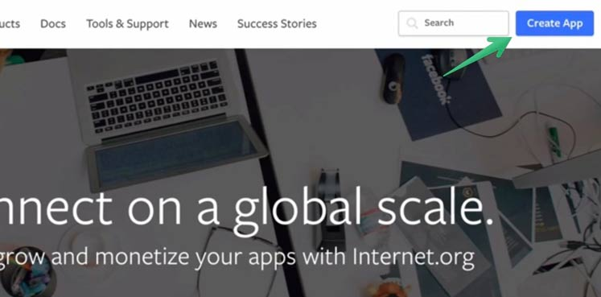
A new popup asking for your app details will open up. Enter the app's display name, your contact email and your app's category. Once you are done, click the "Create App ID" button as shown in the screenshot:
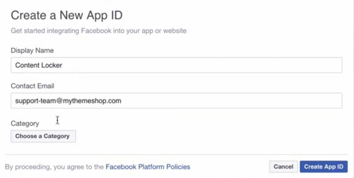
Once your app ID is created, you want to go to the "Settings" section on the next screen:
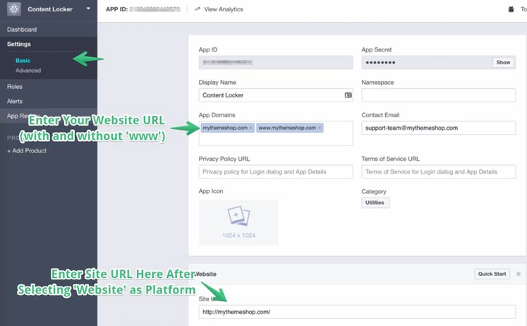
Add Your Website's URL, both with and without the starting 'www'. Then, select "website" as the platform and enter your website's URL.
Head over to the "App Review" section and make the App public like shown in the screenshot:
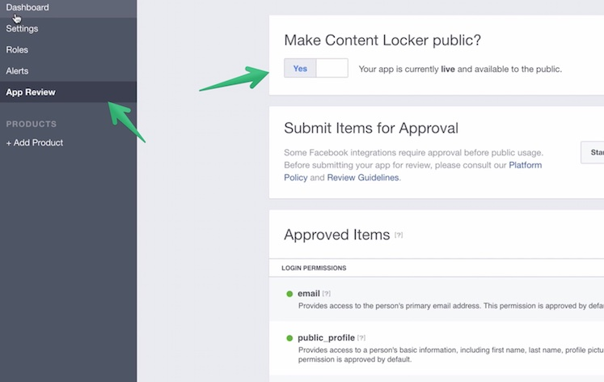
Once that is done, Head back to the Dashboard of the Facebook App and grab the App ID. Copy this App so you can paste it in the Content Locker plugin.
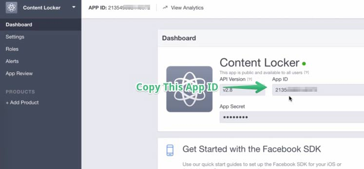
Go back to the Content Locker settings page and paste the App ID you copied in the last step.
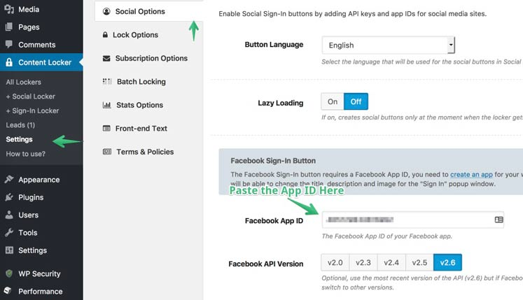
Create Twitter App
Head over to apps.twitter.com and login if you aren't logged in already.
You will see a new button saying "Create New App". Click that button.
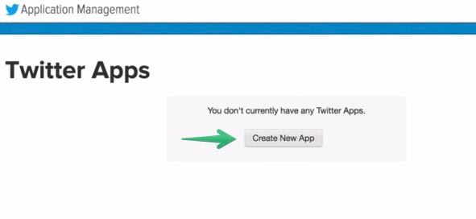
On the next screen, you will be asked for a few details. Enter those details as required.
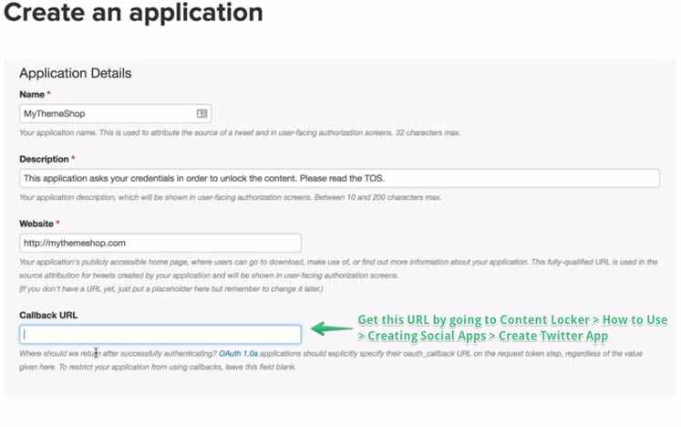
When asked for a Callback URL, scroll down on this page and copy the URL from below section as seen the screenshot:
| Field | How To Fill |
|---|---|
| Name | The best app name is your website name. |
| Description |
Explain why you ask for the credentials, e.g: This application asks your credentials in order to unlock the content. Please read the TOS. |
| Website |
Paste your website URL: http://Domain.com |
| Callback URL |
Paste the URL: http://Domain.com/wp-admin/admin-ajax.php?action=mts_cl_connect&handler=twitter |
Next, click the Settings tab and scroll down to check the option that says "Allow this application to be used to 'sign in with Twitter'".
Head over the Permissions tab and ensure "Read and Write" as well as the "Request email addresses from users" option is selected.
Go to "Keys and Access Tokens" tab and grab the "API Key" as well as the "API Secret". You will need them in the next step.
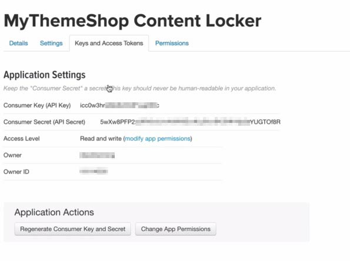
Go back to the Content Locker settings page and paste the codes as seen in the screenshot below:
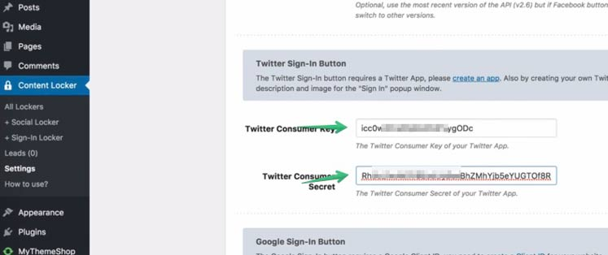
Getting Google Client ID
Head over to console.developers.google.com
You will be greeted with a blank screen where you can create a new project.
Click on the "Create Project" button and give your Project a name.
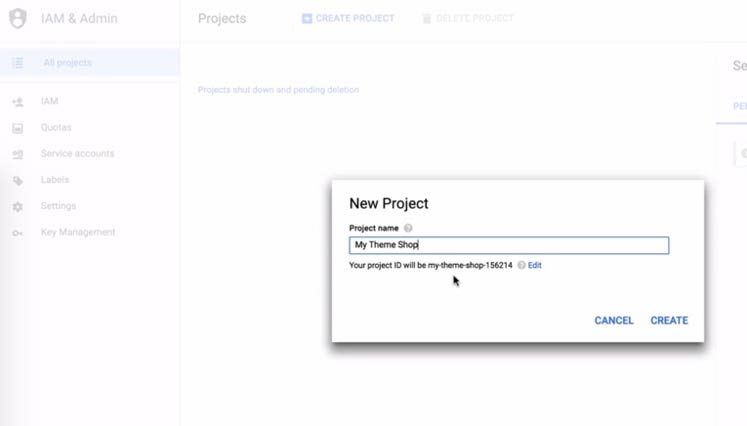
Once you do that, head over to the Library and search for "Google+".
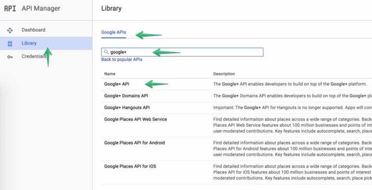
Click on the "Google+ API" link and hit the Enable button.
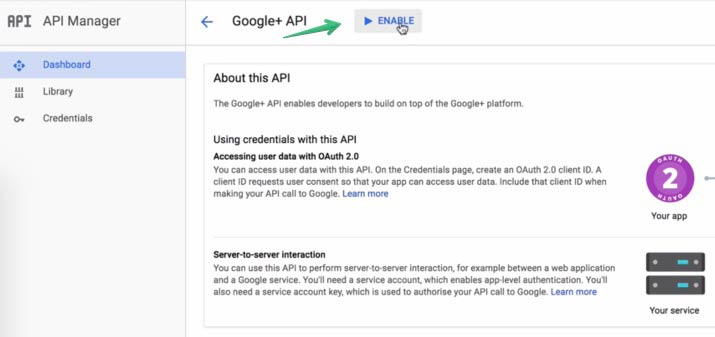
Do the same for "YouTube Data API v3".
Then, click on the "Credentials" button on the left and hit "Create Credentials". Then, choose "OAuth client ID."
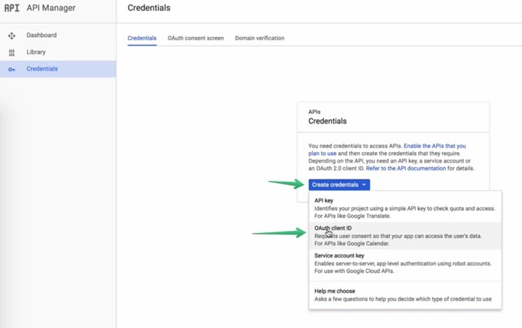
Enter the details on the next screen. When asked for 'Authorised Redirect URIs', paste the URL you see below on this page.
| Field | How To Fill |
|---|---|
| Application Type |
Web Application |
| Authorized Javascript origins |
Add the origins: http://yourdomain.com http://www.yourdomain.com |
| Authorized redirect URIs |
Paste the URL: http://Domain.com/wp-admin/admin-ajax.php?action=mts_cl_connect&handler=google |
On the next screen, you will see the Client ID. Copy it.
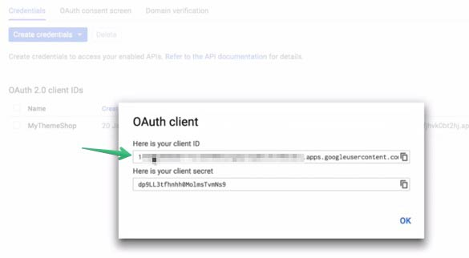
Paste it in the Content Locker settings section designated for "Google Client ID".
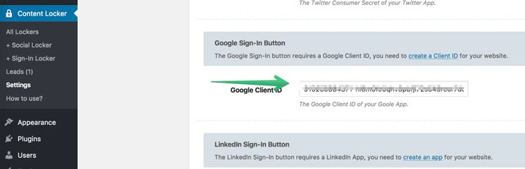
Getting LinkedIn API Key
Go to linkedin.com/secure/developer and click on "Create Application."
On the next screen, add your details like shown in the screenshot below:
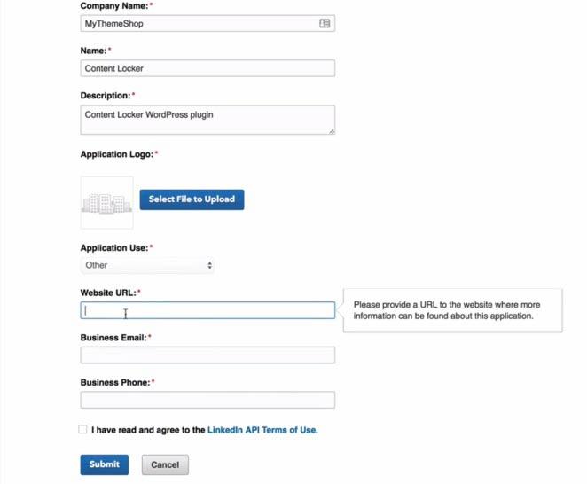
Next, you will be shown the Client ID and some options. Set them up like the screenshot below:
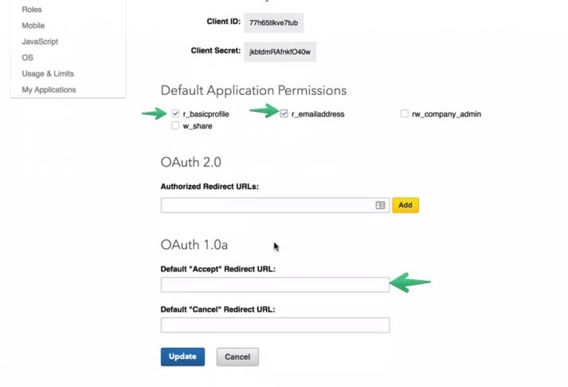
For the "Accept" URL, the one shown on this page below.
| Field | How To Fill |
|---|---|
| Company | Select an existing company or create your own one (you can use your website name as a company name). |
| Name | The best name is your website name. |
| Description |
Explain what your app does, e.g: This application asks your credentials in order to unlock the content. Please read the Terms of Use to know how these credentials will be used. |
| Application Logo URL |
Paste an URL to your logo (80x80px). Or use this default logo: img/large/default-logo.png |
| Application Use |
Select "Other" from the list. |
| Website URL |
Paste your website URL: http://Domain.com |
| Business Email |
Enter your email to receive updates regarding your app. |
| Business Phone |
Enter your phone. It will not be visible for visitors. |
After setting the Application to "Live" status, copy the client ID and client secret you saw in step 3 and paste them in the Content Locker settings page like below.
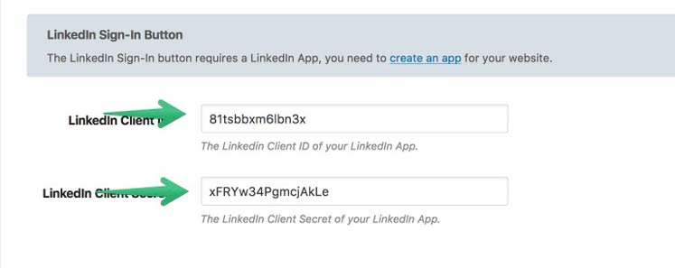
Lock Your Content With Content Locker Pro
Social Locker
Using Content Locker plugin to setup a locker is incredibly easy. We utilize the power of WordPress shortcodes to make the social locker work. This allows you to use multiple social lockers on the same page. So, you can one type of content for Facebook lock and another one for Twitter. Or, you can lock your content and video in separate lockers on the same page or post.
Follow the below steps to setup your first social locker or check the video embedded below:
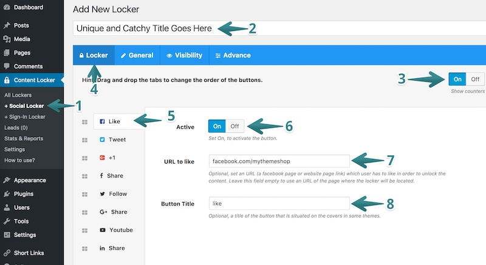
-
Open the social locker section of the Content Locker plugin by going to Your WordPress Dashboard > Content Locker > Social Locker.
-
On the next screen, you will see all the options you get for creating a new social locker. Enter the title in the designated spot. This makes it easier for you to find the quiz in the future.
-
Enable the option here if you want the different social share buttons to show the count of how many times they have been 'liked' or 'tweeted'.
-
Change the wording of your locker by selecting the "Locker" tab and fiddle with all the options inside.
-
First up is Facebook. Change how you want the Facebook like feature to function for your quiz here.
-
You can enable or disable the Like button inside your social locker. This is good if you are experimenting with different options but don't want to keep adding your target URLs.
-
Next, you have to choose which URL/Page a visitor should "Like" in order for the content to unlock. It is a good idea to put your Facebook page URL here. Or, you can use your content's post URL here as well.
-
Then, change the text of your Facebook like button. You can have it say "Like to Unlock", "Like", or just about anything you can imagine. Don't make it too long, though.
That's how easy it is to setup a basic social locker. Follow the same steps for Twitter, Google +1, Facebook Share, Twitter Follow, G+ Share, Twitter Follow, YouTube Subscribe, and LinkedIn Share as well.
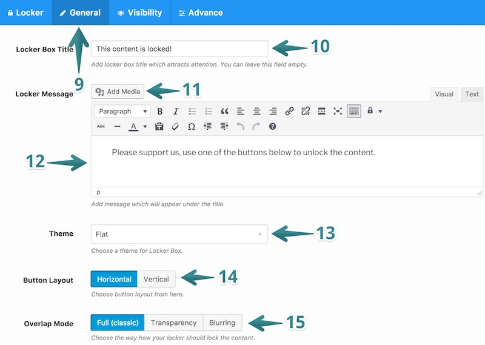
-
Now, we will change what the locker says. Pay attention to this section as it is the place where you can convince your visitors to unlock rest of your content with their social shares.
-
Give your locker section a lucrative title. This is what your visitors will see when they encounter your on-page locker.
-
Add further details with the help of images here. You can add screenshots here to explain the process a bit further.
-
Add more details if you want to provide them to your visitors. Use precise instructions or explain why a visitor should unlock your content instead of going to another website to get the same content.
-
Choose the theme for your locker here. There are 8 different styles to choose from.
-
Select the button layout you want. You can make a choice between Horizontal and Vertical
-
Overlap Mode helps you choose the way you want the content to lock. You can make the locked content fully hidden, or you can tease your visitors with a blurred section of your locked content.
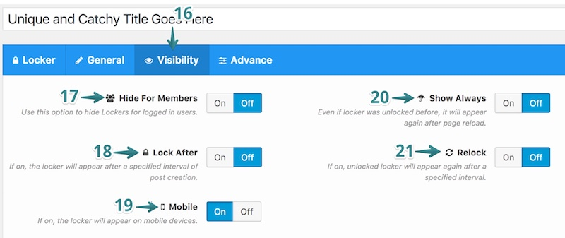
-
If you want your content locker to be selective in nature, you can choose how that would work.
-
Use this option to hide the locker for your logged in users. Registered users that are logged in will the see full content while as the non-logged in users will see the locker.
-
Tease your audience even further by locking you content after a preset time.
-
Don't want mobile visitors to see the locker, disable it for them here.
-
If you choose always to show the locker, it will appear again after page reload even if a visitor previously followed the steps to unlock the content.
-
You can use the Relock feature to lock the content again after a specified interval of time.
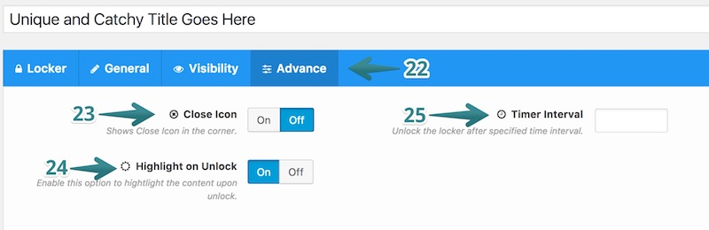
-
Want to customize the locker even further, use the "Advance" tab to do that.
-
Make your locker less intrusive by allowing visitors to close it with a close icon.
-
Enable this option to highlight the content after a visitor has unlocked it.
-
Use this option to unlock the locker after a specified time interval.
Once you are done with all the options, publish the locker and grab the shortcode as shown in the screenshot below:
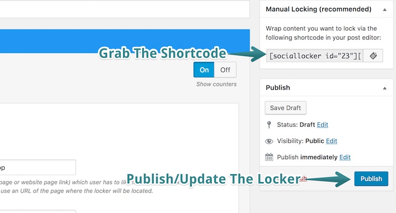
Start Locking Your Content
Once you have created a social locker, it is time to use it in your posts to lock down your most valuable content.
-
Go to create a post like you normally do.
-
Put the content you want to lock within the shortcodes you grabbed using the last screenshot. You can use normal as well as HTML text here.
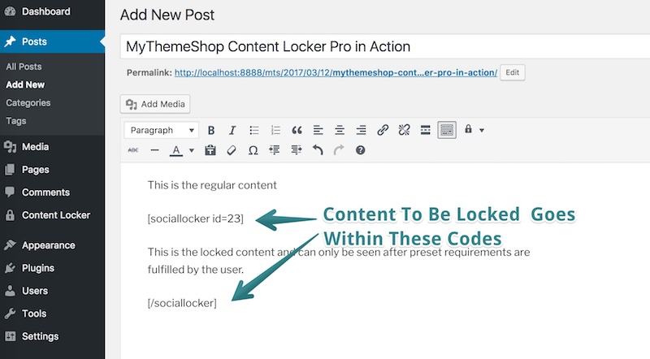
-
If you don't want to copy/paste the shortcode for the locker, you can auto-insert it using the built-in button as well. Check the below screenshot for reference:
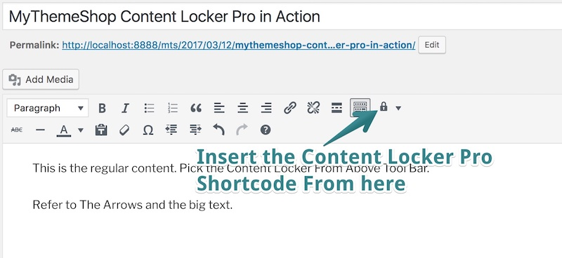
Sign-in Locker
You can use the Content Locker plugin to grab visitors email ID and their name as well. You can ask them to sign in using their Facebook, Twitter, Google, LinkedIn accounts. The plugin enables them to just user their email ID to create a free WordPress account as well.
Whicher option they choose, their email ID will be added to your email list, and you can market to them in the future.
Setting up this option is a bit tedious so make sure you grab a cup of coffee because we need you alert for this one. First of all, you need to make sure that you have connected your website with your apps each on Facebook, Twitter, Google+ and LinkedIn.
| Button Name | Your action to make it work |
|---|---|
| Facebook Sign-In Button | Requires creating a Facebook App |
| Twitter Sign-In Button | Requires creating a Twitter App |
| Google Sign-In Button | Requires getting Google Client ID |
| LinkedIn Sign-In Button | Requires getting a LinkedIn API Key |
The above steps need to be performed only once. After that is done, you can start with your first Signin Locker setup.
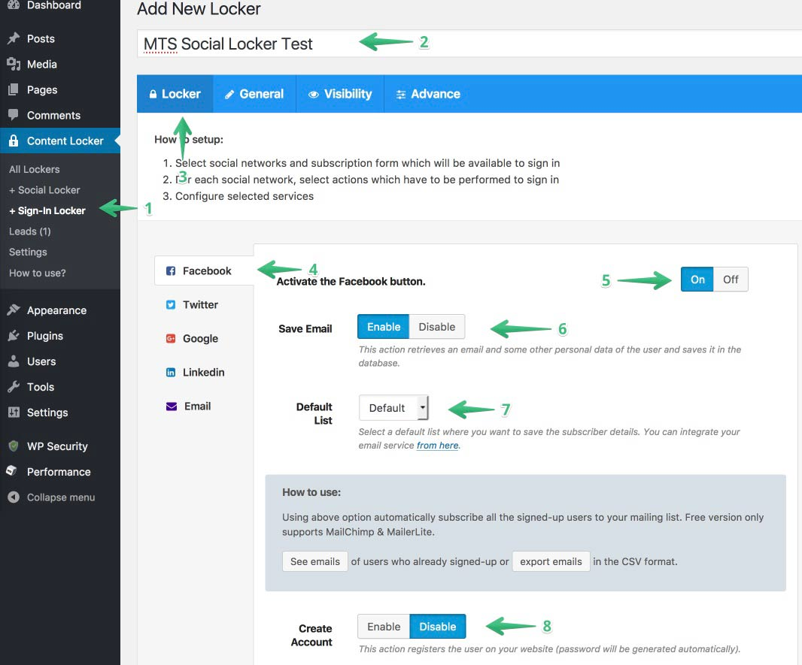
-
Go to your WordPress Dashboard and Locate the Content Locket menu item. Click on the "+Sign-In- Locker" option to bring out the various options.
-
Give your Sign-In locker a descriptive title. This will help you locate it in the future easily.
-
Click on the "Locker" tab if that one isn't pre-activated.
-
Start with the Facebook option and replicate the settings for rest of the social networks.
-
Activate the sign in option so that once users log in using their Facebook account - they can see the locked content instantly.
-
Enable the "Save Email" option if you want to grab their email IDs. You can disable as per your preferences as well.
-
Depending on what email service you use, you can select the list to which your email subscribers will be added.
-
If you want to, you can have each visitor get a free account on your WordPress blog.
Once you are done, you can either save the sign in locker, or you can proceed to other social networks if you want to offer more options to your visitors.
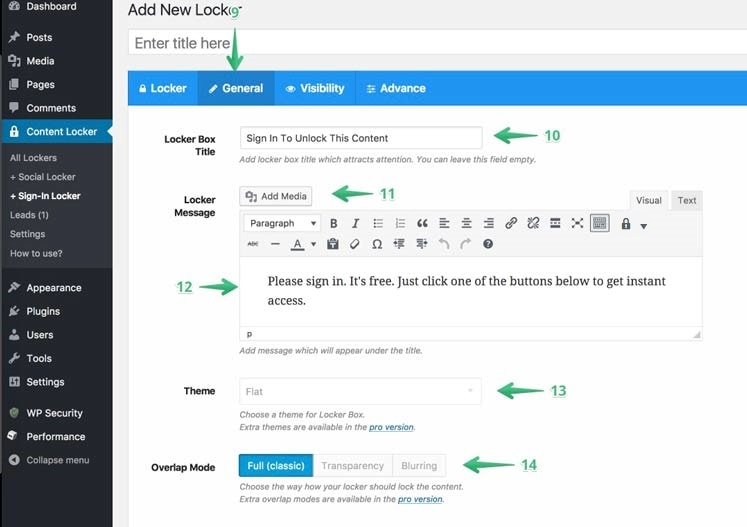
-
Now, we will change what the locker says. Pay attention to this section as it is the place where you can convince your visitors to unlock rest of your content by signing in using their social accounts.
-
Give your locker section a lucrative title. This is what your visitors will see when they encounter your on-page locker.
-
Add further details with the help of images here. You can add screenshots here to explain the process a bit further.
-
Add more details if you want to. Use precise instructions or explain why a visitor should unlock your content by signing in and assure them that their data is safe with you and you won't spam them if they provide you with email ID.
-
Choose the theme for your locker here.
-
Overlap Mode helps you choose the way you want the content to lock. You can make the locked content fully hidden, or you can tease your visitors with a blurred section of your locked content.
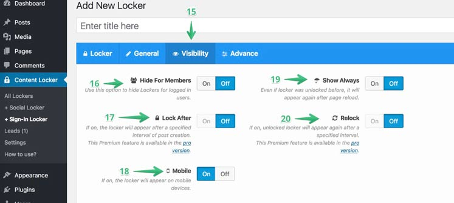
-
Once you are done with the General settings, move to the Visibility part to choose who see the sign-in locker.
-
Use this option to hide the locker for your logged in users. Registered users that are logged in will the see full content while as the non-logged in users will see the option to sign to see the locked content.
-
Tease your audience even further by locking you content after a preset time.
-
Don't want mobile visitors to see the locker, disable it for them here.
-
If you choose always to show the locker, it will appear again after page reload even if a visitor previously followed the steps to unlock the content.
-
You can use the "Relock" feature to lock the content again after a specified interval of time.
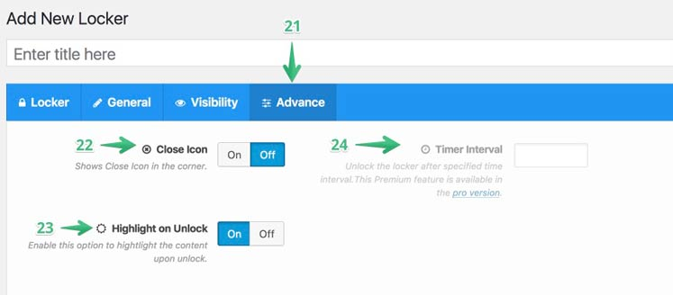
-
Want to customize the locker even further, use the "Advance" tab to do that.
-
Make your locker less intrusive by allowing visitors to close it with a close icon.
-
Enable this option to highlight the content after a visitor has unlocked it.
-
Use this option to unlock the locker after a specified time interval.
Once you are done with all the options, publish the locker and grab the shortcode as shown in the screenshot below:
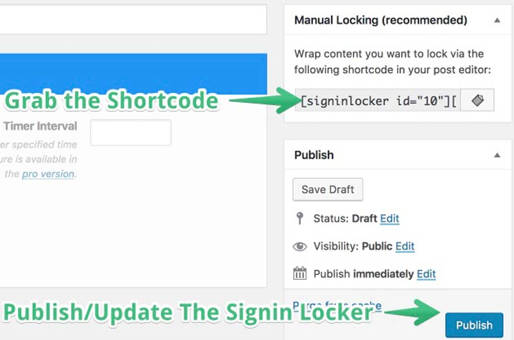
Once you have created a Sign-In Locker, it is time to use it in your posts to lock down your most valuable content.
-
Go to create a post like you normally do.
-
Put the content you want to lock within the shortcodes you grabbed as shown in the last screenshot. You can use normal as well as HTML text here.
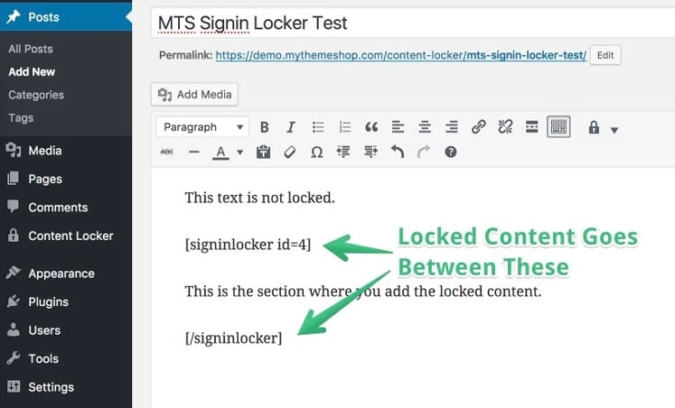
-
If you don't want to copy/paste the shortcode for the locker, you can auto-insert it using the built-in button as well. Check the below screenshot for reference:
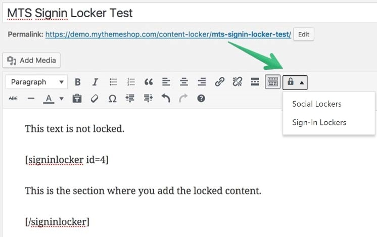